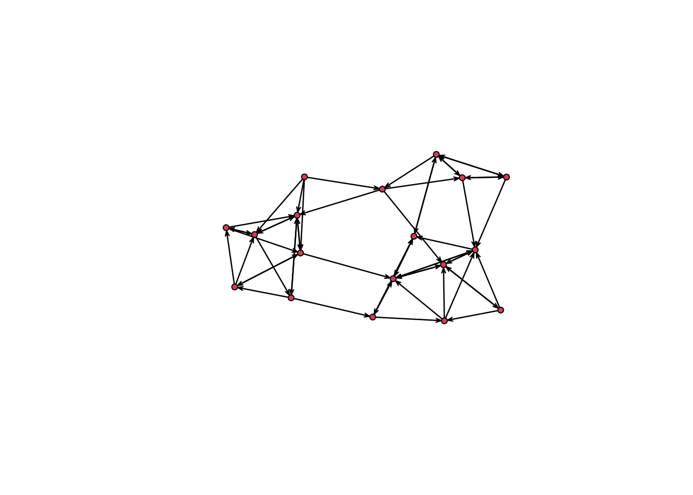
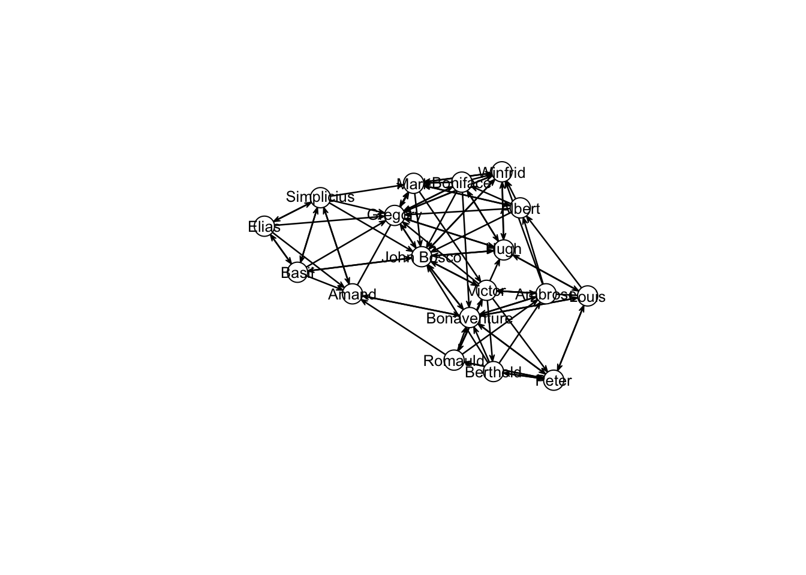
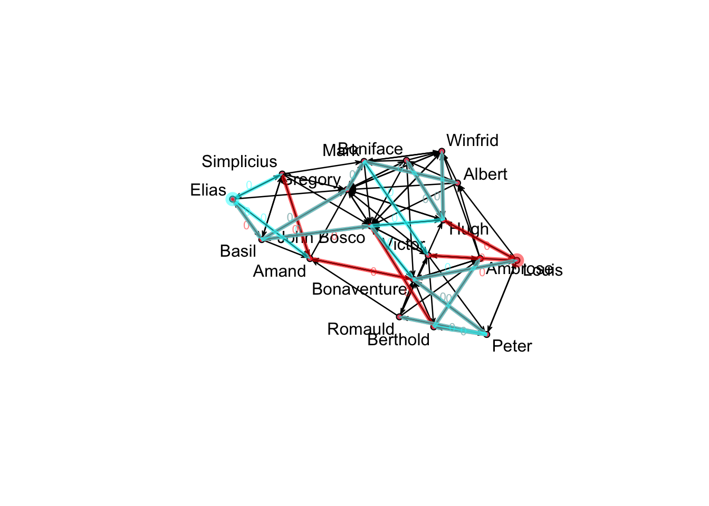

18 Dynamics
In our last week, we will cover network dynamics. In general, there are two primary methods sociologists tend to use when modeling networks over time: TERGMs (temporal ERGMs) and SAOMs (stochastic actor-oriented models). TERGMs build off of the ERGM framework to model network dynamics and therefore model network change primarily at the dyadic-level. SAOMs, on the other hand, models changes in ties as being determined by the actors in question. Each has its strengths and weaknesses, which we will discuss in the following tutorial.
18.1 TERGMs
We’ll begin with TERGMs. Like ERGMs, TERGMs are part of the statnet suite of packages. The basic idea behind them is that rather than specifying a single model regarding how ties are formed in ERGM, we’ll specify two models - one governing formation and the other governing dissolution or persistence. In doing so, we specify the factors that govern tie change over time. It therefore requires data with multiple snapshots of a single network as it changed over time. Generally, this type of data comes in cross-sections, as in the case of Add Health, where network data was collected at two different time points, one year apart. As an example, we will use Sampson’s monastery data, which we mentioned in a previous class. Here networks represent monk’s social relations at a monastery at three different moments in time.
library(statnet)
data(samplk)statnet has a separate object for dynamic networks. We can create it from the network panels via a list and a simple function call, like so:
samp_networks <- list(samplk1,samplk2,samplk3)
samp_dynm_net <- networkDynamic(network.list = samp_networks)## Neither start or onsets specified, assuming start=0
## Onsets and termini not specified, assuming each network in network.list should have a discrete spell of length 1
## Argument base.net not specified, using first element of network.list instead
## Created net.obs.period to describe network
## Network observation period info:
## Number of observation spells: 1
## Maximal time range observed: 0 until 3
## Temporal mode: discrete
## Time unit: step
## Suggested time increment: 1Although they are in a single object now, you can still extract each network individually and plot them. Here is the network at time 2, for example.
plot(network.extract(samp_dynm_net, at = 2))
statnet also has cool options for visualizing this kind of data. For example, one of its key features is the ability to calculate temporal paths in networks. Temporal paths trace the sequences and distances of nodes in a networkDynamic object reachable from an initial node, following paths constrained by edge timing and direction, if the network is directed.
v11path <- tPath(samp_dynm_net, v = 11, direction = 'fwd')
v17path<-tPath(samp_dynm_net, v=17, direction = 'fwd')
coords<-plot(samp_dynm_net,
displaylabels=TRUE,
label.cex=0.8,
label.pos=5,
vertex.col='white',
vertex.cex=3,
edge.label.cex=0.7
)
plotPaths(samp_dynm_net, coord=coords, list(v11path,v17path))
18.1.1 TERGM terms and types
TERGMs have very similar term names as ERGMs. For example, edges counts the number of ties in the network and nodematch captures homophily. What changes is how these terms are counted and used in the model, which will depend on the type of TERGM one specifies. This will in turn affect how the models are interpreted.
While there are five different types of models one can specify within a TERGM, each governing a specific type of tie change in the network. Here, we focus on what is called a separable TERGM (STERGM). Separable models specify a process for tie dynamics using operators that are independent within time-step; the Form() + Diss() (or Persist()) model is the classic example. Here, the dyads can be partitioned into two sets at each timepoint: the empty dyads, which are subject to formation, and the tied dyads, which are subject to dissolution. A single dyad change will affect either the Form() model statistics or the Diss()/Persist() model statistics at each timestep, but not both. So the terms in the two operators are uncorrelated, and can be separately evaluated at each step for estimation or simulation.
Form()tracks the formation of ties and its terms represent the factors that influence tie formation.
Diss()tracks the dissolution of ties and its terms represent the factors that influence tie dissolution
Note that while these separable sets are independent within timestep, they are still Markov-dependent between timesteps: the formation of a tie at time t can influence the dissolution of an adjacent tie at t+1. And within each operator set, there can still be dyad-dependence within step (if dyad-dependent terms are specified in the model).
18.2 tergm syntax
For a call to tergm, you pass
the formula, but this now will typically include more than one Operator (each with its own set of terms), and
the estimation method, which will depend on the type of data you have.
For example, for a model specified with Form() and Diss() operators:
# tergm(my.dynamic.network ~ #do not run this!
# Form(~ edges + gwesp(0, fixed=T)) +
# Diss(~ edges + nodefactor('age')),
# estimate = `insert method`
# )Let’s return to the Sampson monastery data, and consider models for the way this network changes across the 3 observed time points. This is a directed network, so it would be natural to consider mutuality as a predictor. We can also add terms for the presence of cycles and transitive triads.
samp_fit <- tergm(
samp_dynm_net ~
Form(~edges+mutual+cyclicalties+transitiveties) +
Diss(~edges+mutual+cyclicalties+transitiveties),
estimate = "CMLE",
times = c(1:2)
)This is a small network, so we shouldn’t expect many of the terms to be significant. However, we do see that mutual ties are more likely to form and that ties which are in transitive triads are less likely to dissolve than those in intransitive triads. This may signal norms towards reciprocity and hierarchy formation.
18.3 RSiena -
The SAOM is a probability model for network changes in continuous time, and the estimation theory was elaborated for network data available at discrete time points. Network ties are assumed to change one tie at a time (Holland and Leinhardt 1977), with actors choosing which of the outgoing ties to change based on a multinomial choice probability model (McFadden 1974). Dependence between ties is modeled by allowing the actors’ choices concerning tie changes to be influenced by the embedding of the potential ties in local configurations. These are akin to the local configurations in the ERGM but take the perspective of a focal actor, while there is no focal actor in the ERGM. Due to its actor-oriented formulation, the SAOM offers a direct interpretation of parameters as reflecting differential probabilities of actors’ choices with regard to their outgoing ties.
install.packages("RSiena", repos="https://cloud.r-project.org")library(RSiena)First, we have to assemble the three different time points as a single three-dimensional array. This is the data format that RSiena requires. It implies that networks at each time point must have the same set of nodes. If a node is not part of your network at a certain time point, you should add them as an isolate.
samp_mats <- array(c(as.matrix(samplk1), as.matrix(samplk2), as.matrix(samplk3)), dim = c(18, 18, 3))Next we will create siena data from the array using the sienaDataCreate() function.
samp_siena <- sienaDataCreate(sienaDependent(samp_mats))You can get an outline of the data set with some basic descriptives from
print01Report( samp_siena, modelname="sampson_monastery_siena")Now we will begin fitting the model. To do so, we first need to create an effects object. This is where the set of terms we want to include in our models will be stored.
sampeff <- getEffects(samp_siena)All the effects that you can possibly include in the model given your network’s structure can be seen using the effectsDocumentation() function.
effectsDocumentation(sampeff)For a detailed description of all of these terms, see Chapter 12 in the RSiena manual.
Let’s build a simple model. For example, we can build a basic structural effects model with reciprocity, transitivity, and 3-cycles
sampeff <- includeEffects(sampeff, transTrip, cycle3, recip)## effectName include fix test initialValue parm
## 1 reciprocity TRUE FALSE FALSE 0 0
## 2 transitive triplets TRUE FALSE FALSE 0 0
## 3 3-cycles TRUE FALSE FALSE 0 0Now we will initiate the algorithm. You can adjust how RSiena fits the model by changing the options in sienaAlgorithmCreate().
sampalgorithm <- sienaAlgorithmCreate( projname = 'sampson_monastery_siena' )## If you use this algorithm object, siena07 will create/use an output file sampson_monastery_siena.txt .Finally, we’ll run the model.
samp_out <- siena07( sampalgorithm, data = samp_siena, effects = sampeff)We can check the following to see if it converged properly. If the convergence criterion is less than 0.25, convergence is good.
samp_out$tconv.max < 0.25## [,1]
## [1,] TRUEHere, convergence is good. If convergence is inadequate, then you can estimate again using your previous output as the “previous answer” from which estimation continues.
samp_out_continued <- siena07( sampalgorithm, data = samp_siena, effects = sampeff, prevAns=samp_out)samp_out_continued$tconv.max < 0.25## [,1]
## [1,] TRUEIf convergence is good, you can look at the estimates using the summary() function.
summary(samp_out)## Estimates, standard errors and convergence t-ratios
##
## Estimate Standard Convergence
## Error t-ratio
##
## Rate parameters:
## 0.1 Rate parameter period 1 3.5495 ( 0.6611 )
## 0.2 Rate parameter period 2 2.5941 ( 0.5318 )
##
## Other parameters:
## 1. eval outdegree (density) -1.5247 ( 0.1993 ) 0.0442
## 2. eval reciprocity 1.3961 ( 0.2853 ) 0.0561
## 3. eval transitive triplets 0.3647 ( 0.1175 ) 0.0286
## 4. eval 3-cycles -0.2252 ( 0.2048 ) 0.0144
##
## Overall maximum convergence ratio: 0.0744
##
##
## Total of 2214 iteration steps.
##
## Covariance matrix of estimates (correlations below diagonal)
##
## 0.040 -0.029 -0.015 0.002
## -0.512 0.081 0.010 -0.019
## -0.634 0.297 0.014 -0.013
## 0.043 -0.333 -0.521 0.042
##
## Derivative matrix of expected statistics X by parameters:
##
## 93.280 60.551 200.899 52.080
## 31.111 41.667 70.061 22.951
## 132.957 83.283 434.498 106.341
## 49.735 42.956 162.664 58.852
##
## Covariance matrix of X (correlations below diagonal):
##
## 108.209 73.411 252.977 65.241
## 0.776 82.747 185.126 55.897
## 0.851 0.712 817.164 212.424
## 0.759 0.744 0.900 68.231If you would like to update your model, you can use includeEffects() to add or remove effects. For example, the following will remove the 3-cycle term.
sampeff <- includeEffects(sampeff, cycle3, include = FALSE)## [1] effectName include fix test initialValue
## [6] parm
## <0 rows> (or 0-length row.names)You can then refit the model.
samp_out_wo_3cycle <- siena07(sampalgorithm, data = samp_siena, effects = sampeff, prevAns=samp_out_continued)